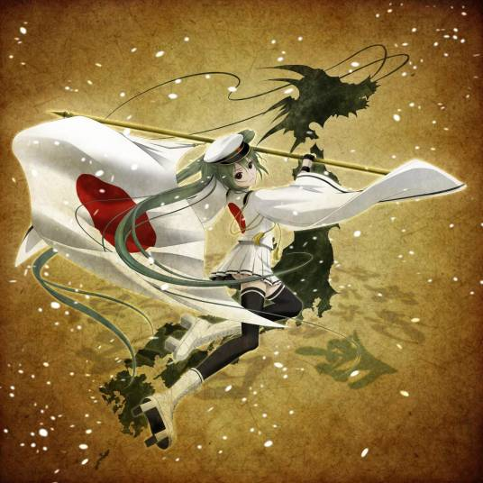
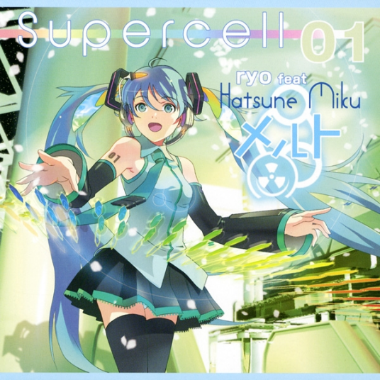

初音未来（はつね みく、初音ミク、Hatsune Miku）
是日本Crypton Future Media公司以雅马哈Vocaloid的语音合成软件为基础开发的女虚拟歌手， 初始形象由日本插画家KEI设计，音源由日本声优藤田咲提供，在VOCALOID2中首次登场，属于pia pro系列角色。中国由上海新创华文化发展有限公司代理。
VOCALOID 2 声库正式发售，KEI 绘制的形象正式公开，引发Niconico动画热潮。
“Miku no Hi Kanshasai 39's Giving Day”演唱会举办，全息投影技术首次大规模应用。
作为暖场嘉宾登上 Lady Gaga 的北美巡演舞台，走向国际主流视野。
持续举办“魔法未来 (Magical Mirai)”等大型演唱会，并推出《世界计划》等衍生游戏。

大和风格摇滚曲，被誉为Miku的“国歌”之一，极具爆发力。
摇滚 / 和风
ryo (supercell) 的成名作，奠定了Miku在二次元文化的地位。
流行 / 恋爱展现了傲娇大小姐属性的经典曲目，现场演唱会必喊“打Call”的神曲。
流行 / 傲娇